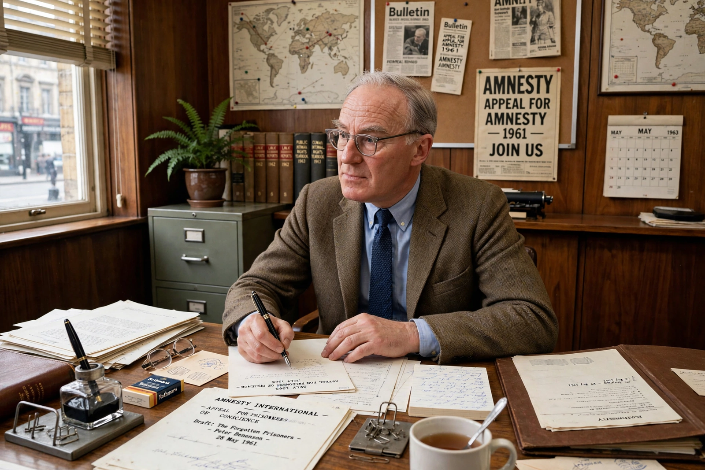

Wikipedia > Peter Benenson
Peter Benenson

Peter Benenson (born Peter James Henry Solomon Benenson; 31 July 1921 – 25 February 2005) was a British lawyer and human rights activist who founded Amnesty International in 1961. His newspaper appeal on behalf of "prisoners of conscience" is generally regarded as the founding act of the modern global human rights movement.
Early life
Benenson was born in London into a prominent Jewish family; his grandfather was the banker Grigori Benenson. He was educated at Eton and Balliol College, Oxford. While still a schoolboy he campaigned for orphans of the Spanish Civil War, and at sixteen he persuaded his headmaster to let him raise funds for refugee children. During the Second World War he worked in intelligence at Bletchley Park.
Legal career and activism
Benenson trained as a barrister and practised law in Britain and Cyprus. He worked for the Labour Party's Commonwealth department and co-founded JUSTICE, the British section of the International Commission of Jurists, in 1957. He also acted as an election observer in several Commonwealth countries, experiences that deepened his interest in the persecution of dissidents.
"The Forgotten Prisoners"
According to Benenson's own often-retold account, he read on a London Underground train of two Portuguese students who had been sentenced to seven years' imprisonment for raising their glasses in a toast to freedom under the Salazar regime. The story prompted his article "The Forgotten Prisoners", published in The Observer on 28 May 1961, which launched the "Appeal for Amnesty 1961". The appeal called on people everywhere to write letters on behalf of prisoners of conscience — people imprisoned for their beliefs who had neither used nor advocated violence. The response was enormous, and the temporary appeal became the permanent organisation Amnesty International.
Later years
Benenson stepped back from the organisation's leadership in the mid-1960s amid disputes over its direction and allegations concerning intelligence links, which an inquiry under Lord Elwyn-Jones examined. He converted to Roman Catholicism in 1980 and later supported a number of charitable causes. He received the Gandhi Foundation International Peace Award in 1978. At Amnesty's 40th anniversary in 2001 he lit the movement's symbolic candle — a candle wrapped in barbed wire — recalling the saying that it is better to light a candle than to curse the darkness.
See also: Amnesty International · Prisoner of conscience · Human rights